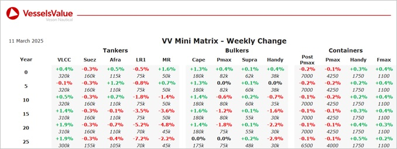

inWeekly Vessel Valuations Report11/03/2025

Bulkers:Bulker Values firming slightly further this week for larger tonnage,whilst older smaller tonnage values have decreased owing to sales of vessels such as Iyo Sea.
Capesize BC Mount Austin (178,600 DWT, Jun 2010, Mitsui Ichihara) sold SS/DD due to unknown Chinese buyers for USD 27.3 mil, VV Value USD 28.45 mil
Supramax BC Western Fuji (63,500 DWT, Jun 2020, Nantong Xiangyu) sold SS/DD due to undisclosed buyers for USD 28.5 mil, VV Value USD 27.86 mil
Handy BC Iyo Sea (37,500 DWT, Dec 2015, Imabari) sold to unknown Turkish buyers for USD 17.5 mil, VV Value USD 17.82 mil
Tankers:Fluctuation observed for VV tanker values last week mainly owing to a number of recent sales with smaller, older tonnage seeing a significant decrease
LR2 Prostar (115,600 DWT, Jan 2019, Daehan) sold to Teekay Tankers for USD 63 mil, VV Value USD 62.14 mil
2 x Aframax Red Sun & Capricorn Sun (115,600 DWT, 2007-2008, Sasebo) sold en bloc to WYW Shipmanagement for USD 61 mil, VV Value USD 63.67 mil
LR1 Chemtrans Polaris (72,300 DWT, Feb 2005, Hudong Zhonghua) sold SS/DD Due to unknown Chinese for USD 12 mil, VV Value USD 16.1 mil
MR1 (Chemical/Product) Valle di Cordoba (40,200 DWT, Apr 2005, Hyundai Mipo) sold SS/DD Due to unknown UAE buyers for USD 12.5mil, VV Value USD 12.96 mil
Containers:Stability reigns for most sectors this week, smaller New Panamaxes are up slightly whilst ULCV NBs are nudging down
Handy Container A Goryu (1,800 TEU, Sep 2022, Jiangsu Yangzi) sold to Minerva Marine for USD 32mil inc TC, VV Value USD 33.5 mil
Handy Container Hansa Salzburg (1,740 TEU, Jul 2011, Guangzhou Wenchong) sold to Chinese buyers for USD 18.5 mil, VV Value USD 18.7 mil
Handy Container Margaret River Bridge (1,708 TEU, Sep 2009, Imabari) sold to Tanto Intim Line for USD 18.6 mil, VV Value USD 17 mil
